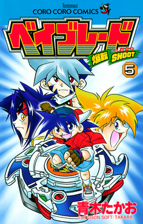
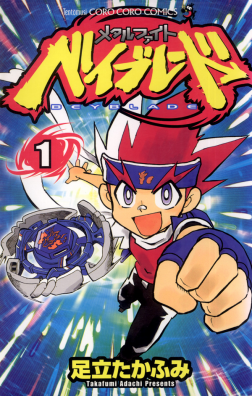
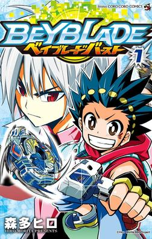
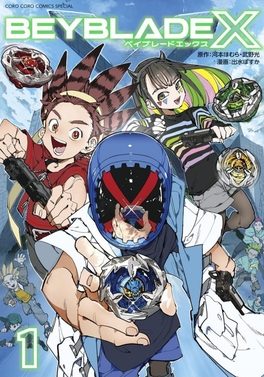

The Beyblade anime helped turn the toyline into a full franchise by giving the spinning tops characters, teams, rivalries, and dramatic battles. Instead of only being toys, Beyblades became connected to stories about friendship, competition, training, and becoming stronger. The early anime focused on teams of Bladers competing in tournaments with powerful Beyblades connected to mythical spirits, while later series changed the casts, rules, battle systems, and overall style. Across each generation, the anime gave fans a reason to care about the battles beyond just who won or lost.

The Metal Saga introduced a new cast led by Gingka Hagane and his Beyblade, Storm Pegasus. The anime began with Beyblade: Metal Fusion, which first aired in Japan in 2009 and later aired internationally, including on Cartoon Network in 2010. Unlike the original series, the Metal Saga used metal parts in the Beyblades, making battles feel faster, heavier, and more intense. Many Beyblades were based on constellations and mythical themes, such as Pegasus, Leone, and L-Drago. The story focused on Gingka traveling across different regions, battling strong Bladers, and stopping dangerous opponents like Ryuga and the Dark Nebula organization. This era became popular for its action-heavy battles, tournament arcs, and dramatic rivalries.

The Metal Saga introduced a new cast led by Gingka Hagane and his Beyblade, Storm Pegasus. The anime began with Beyblade: Metal Fusion, which first aired in Japan in 2009 and later aired internationally, including on Cartoon Network in 2010. Unlike the original series, the Metal Saga used metal parts in the Beyblades, making battles feel faster, heavier, and more intense. Many Beyblades were based on constellations and mythical themes, such as Pegasus, Leone, and L-Drago. The story focused on Gingka traveling across different regions, battling strong Bladers, and stopping dangerous opponents like Ryuga and the Dark Nebula organization. This era became popular for its action-heavy battles, tournament arcs, and dramatic rivalries.

Beyblade Burst changed the anime by introducing the Burst gimmick, where Beyblades could separate during battle for a dramatic finish. The series began with Valt Aoi, a cheerful and hardworking Blader who wanted to improve and inspire others through his love of Beyblade. Compared to the Original Series and Metal Saga, Burst also marked a major shift in the tone of the franchise by making the battles feel more grounded and sports-focused instead of heavily fantasy-based. While earlier generations often centered around mystical powers, legendary spirits, and world-threatening conflicts, Burst focused more on training, tournaments, rankings, teamwork, and personal improvement. This made the series feel closer to a real competitive sport while still keeping the excitement and energy of Beyblade battles. One major difference with Burst is that it became the first Beyblade anime era to switch protagonists almost every season, with Valt being the main character for two seasons before newer leads like Aiger and others took over. This gave the Burst era a fresh feeling across its different seasons while still keeping the focus on friendship, training, rivalries, and competitive growth.

Beyblade X is the newest anime generation and gives the franchise a more modern competitive direction. It focuses on faster battles, professional-style competition, and the Xtreme Line stadium gimmick, which makes Beyblades move at much higher speeds during matches. Compared to earlier series, Beyblade X feels more grounded and sports-focused, with a stronger emphasis on strategy, teamwork, rankings, and personal improvement. The story follows a trio of protagonists—Kazami Bird, Ekusu Kurosu, and Multi Nanairo—as they compete together as Team Persona while climbing the competitive Beyblade scene. One major strength of Beyblade X is its balanced cast and stronger focus on teamwork. Bird is relatable because he begins as an inexperienced Blader who struggles with confidence, while Ekusu brings excitement with his mysterious personality and incredible skill. Multi stands out as both a talented Blader and a creative Beyblade designer, helping the team in battles and strategy. The series also improves representation by treating female characters like Multi as serious competitors who actively contribute to the story, making the cast feel more modern and inclusive.
I started watching Beyblade during the Metal Saga, and my first Beyblades were Storm Pegasus and Lightning L-Drago as a gift from my dad.
I got into the series because it aired on Cartoon Network in June 2010, which made it one of the first versions of Beyblade I really connected with.
My all-time favorite series is a tie between Beyblade Burst and Beyblade X because I like how both of them feel more grounded and competitive, almost like sports anime instead of high fantasy adventure stories.
I also think Beyblade X has some of the best character development in the franchise.
My favorite Beyblade protagonist is Valt Aoi, because I found him enjoyable to watch from beginning to end and he felt like a more believable version of the classic cheerful hero type.
His story also has a good message about effort, hard work, and inspiring others to do their best. My favorite Beyblade is Earth Wolf 105WD from the Metal Saga.
Suprisingly, It does not appear in the TV show and was only released as part of the toyline, but it helped me discover my love for Balance Types.
It was also a very strong Beyblade for me personally, and I won a lot of battles with it.